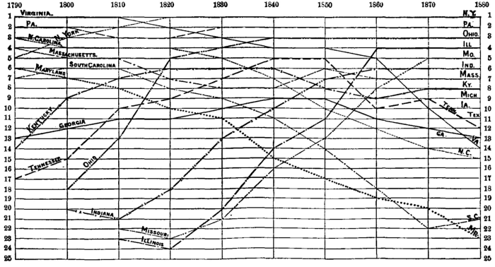

Chapter 39: Influence Of The Progress Of Industry And Population On Rents, Profits, And Wages¶
39.1 § 1. Characteristic features of industrial Progress¶
Continuing the inquiry into the nature of the economical changes taking place in a society which is in a state of industrial progress, we shall next consider what is the effect of that progress on the distribution of the produce among the various classes who share in it. We may confine our attention to the system of distribution which is the most complex, and which virtually includes all others—that in which the produce of manufactures is shared between two classes, laborers and capitalists, and the produce of agriculture among three, laborers, capitalists, and landlords.
The characteristic features of what is commonly meant by industrial progress resolve themselves mainly into three, increase of capital, increase of population, and improvements in production; understanding the last expression, in its widest sense, to include the process of procuring commodities from a distance, as well as that of producing them. It will be convenient to set out by considering each of the three causes, as operating separately; after which we can suppose them combined in any manner we think fit.1
39.2 § 2. First two cases, Population and Capital increasing, the arts of production stationary¶
For the sake of clearness we will form two general groups of these causes:
A. The Influence of Population and Capital (Improvements remaining stationary).
B. The Influence of Improvements (Population and Capital remaining stationary).
We will first take up A, and under this division make for convenience two separate suppositions:
I. The first is that, while Population is advancing, Capital is stationary. By this means we can study separately the operation of one of the factors of societary progress, Population, and see its influence on rents, profits, and wages. There being only the same given quantity of wealth in the form of capital to be now distributed among more laborers (1), real wages must fall; whereupon, if the same capital purchases more labor, and obtains more produce (2), profits rise. Now, if the laborers were so well off before as to suffer the reduction of wages to take place not in their food, but in their other comforts, then, if each laborer uses as much food as before, and if, as by the supposition, there are more laborers, an increased quantity of food will be required from the soil. This supply can be produced only at a greater cost, and, as inferior soils are called into cultivation (3), rents will rise. This last action (3), however, will have an influence on the rise of profits (2). For it was only by a reduction of real wages that profits rose; but if the cost of food, that is, the real wages, have since risen, then one of the elements entering into cost of labor has risen, and in so far will offset the fall of real wages; so that profits will not gain so much as if rents had not risen. The result of this first supposition, then, is, that the landlord is the chief gainer:
I. (1.) Wages fall.
(2.) Profits rise (less if rents rise).
(3.) Rents rise.
II. We will now take up the second supposition under A, that while Capital is advancing Population remains stationary. Then, of course (1), wages will rise; and, as there is no improvement to cheapen the cost of their real wages, there will be an increase in cost of labor to the capitalist, and (2) profits will fall. If, now, the laborers, being better off, demand more food, the new food would cost more, as the margin of cultivation was pushed down, and (3) rents would inevitably rise. But not only have the laborers received more real wages, but since that change the cost, as just described, of these real wages has increased. Therefore (2), profits would fall still more than by the rise of real wages. In this supposition, consequently, while the laborer gains, so does the landlord:
II. (1.) Wages rise.
(2.) Profits fall (more if rents rise).
(3.) Rents rise.
A. It is easy for us now to take into our view the total effects under A, and see what the combined action of I and II would be. That is, if both Capital and Population (improvements remaining stationary) increase, what will be the effect on Wages, Profits, and Rent? Of course, we must suppose that Capital and Population just keep pace with each other; and in that case (1) real wages remain the same, each laborer receiving the same quantity and same quality of commodities as before. Hence, if each laborer receives the same quantity as before, and there are many more laborers, there will be an increased demand put upon the soil for food, poorer soils will be cultivated, and the cost of the products will rise. So (3) rents rise. But if each laborer receives the same quantity of real wages as before, and the cost of them has risen, as just explained, an increased cost of labor will result which must come out of profits. (2) Profits will fall. So that the results of A upon distribution, taken separately from B, are that the owner of capital loses; but the owner of land again gains.
A. (1.) Wages the same.
(2.) Profits fall.
(3.) Rents rise.
39.3 § 3. The arts of production advancing, capital and population stationary¶
Now, let us go back to our first general group of causes, B—an advance in the arts of production (while capital and population remain stationary). We can now study by themselves the effect of improvements on wages, profits, and rent. The general effects arising from the extended introduction of machinery into agriculture and manufactures, the lowered cost of transportation by steam, have been to lessen the value of articles consumed chiefly by the laboring-classes. For the sake of clearness, imagine that the improvement comes suddenly. The first effect will be to lower the value and price of articles entering into the real wages of the laborers; and, if those consist mostly of food, there will be a rise in the margin of cultivation and a fall in rents (3). It has been previously shown2 that improvements retard, or put back, the law of diminishing returns from land (or in manufactures compensate for it), and so lower rents. The poorest soil cultivated is now of a better grade than before, and the produce is yielded at a less cost and value; so that the land with which the best grades are compared, to determine the rent, is not separated from the best grades by so wide a gap. It would at first blush seem, then, that the interests of the landlord were antagonistic to improvements, since they lower rents; but, in practice, it is not so, as we shall soon see.
We have seen that improvements cheapen the price of articles entering into the real wages of the laborer. Having had a given sum as money wages before the change, then, when the sudden change of improvements came, it lowered prices to the laborer, and the same money wages bought more (1) real wages. If nothing more happened, we could see that improvements raised real wages—without lowering (2) profits (because cost of labor remains the same, since the lowered cost of the articles consumed was exactly in proportion to the increase of real wages). And, if the laborers chose to retain this higher standard, this would be the situation. Sadly enough, however, in practice they are apt to be satisfied with the old standard; and the amount of real wages to give the old standard of living can be had now for less money wages. While only the same number, without any increase, can live at the new (higher) standard, a larger number can live at the old (lower) standard. In short, the obstacles to an increase of population will be removed by the possession of higher money wages. After a generation, it is very probable that a larger number of laborers will be in existence living at the same (or possibly a slightly higher) standard of real wages, and money wages will have fallen.
Now we can understand better than before what would be the practical result of the causes under B. (3.) Rent has fallen; money wages have fallen (even if (2) real wages have not); and, since real wages have not fallen in the proportion that their cost has been reduced, (2) profits will have risen. The general result of the causes under B alone, acting as just described, will then be:
B. (1.) Real wages remain the same; money wages less.
(2.) Profits rise.
(3.) Rents fall.
39.4 § 4. Theoretical results, if all three Elements progressive¶
We have considered, on the one hand, under A, the manner in which the distribution of the produce into rent, profits, and wages is affected by the ordinary increase of Population and Capital; and on the other, under B, how it is affected by improvements in production, and more especially in agriculture, as follows:
A. (1.) Wages the same. B. (1.) Real wages the same, money wages less.
A. (2.) Profits fall. B. (2.) Profits rise.
A. (3.) Rents rise. B. (3.) Rents fall.
The effects are clearly contrasted. Under A, we see a tendency to a rise of rents (3), an increased cost of labor, and a fall of profits (2); under B, a fall of rents (3), a diminished cost of labor, and a rise of profits (2). We have, therefore, analyzed the forces belonging to the progress of industry, and found two distinct and antagonistic forces, working against each other. If, at any period, improvements (B) advance faster than population and capital (A), rent and money wages will tend downward and profits upward. If, on the other hand, population advances faster than improvements (B) either the laborers will submit to a reduction in the quantity or quality of their food, or, if not, rent and money wages will progressively rise, and profits will fall.
39.5 § 5. Practical Results¶
This, however, is not the final and practical result. We have hitherto supposed that improvements, B, come suddenly. In point of fact, agricultural skill is slowly diffused, and inventions and discoveries are, in general, only occasional, not continuous in their action, as is the increase of capital and population. Inasmuch as it seldom happens that improvement has so much the start of population and capital as actually to lower rent, or raise the rate of profits, population almost everywhere “treads close on the heels of agricultural improvement,” and effaces its effects as fast as they are produced.
The reason why agricultural improvement seldom lowers rent is, that it seldom cheapens food, but only prevents it from growing dearer; and seldom, if ever, throws land out of cultivation, but only enables worse and worse land to be taken in for the supply of an increasing demand. What is sometimes called the natural state of a country which is but half cultivated, namely, that the land is highly productive, and food obtained in great abundance by little labor, is only true of unoccupied countries colonized by a civilized people. In the United States the worst land in cultivation is of a high quality (except sometimes in the immediate vicinity of markets or means of conveyance, where a bad quality is compensated by a good situation); and even if no further improvements were made in agriculture or locomotion, cultivation would have many steps yet to descend, before the increase of population and capital would be brought to a stand; but in Europe five hundred years ago, though so thinly peopled in comparison to the present population, it is probable that the worst land under the plow was, from the rude state of agriculture, quite as unproductive as the worst land now cultivated, and that cultivation had approached as near to the ultimate limit of profitable tillage in those times as in the present. What the agricultural improvements since made have really done is, by increasing the capacity of production of land in general, to enable tillage to extend downward to a much worse natural quality of land than the worst which at that time would have admitted of cultivation by a capitalist for profit; thus rendering a much greater increase of capital and population possible, and removing always a little and a little further off the barrier which restrains them; population meanwhile always pressing so hard against the barrier that there is never any visible margin left for it to seize, every inch of ground made vacant for it by improvement being at once filled up by its advancing columns. Agricultural improvement may thus be considered to be not so much a counter-force conflicting with increase of population as a partial relaxation of the bonds which confine that increase.
Now, since improvements enable a much poorer quality of land to be ultimately cultivated, under the constant pressure of the increase of population and capital, improvements enable rent (3) in the end to rise gradually to a much higher limit than it could otherwise have attained.
If a great agricultural improvement were suddenly introduced, it might throw back rent for a considerable space, leaving it to regain its lost ground by the progress of population and capital, and afterward to go on further. But taking place, as such improvement always does, very gradually, it causes no retrograde movement of either rent or cultivation; it merely enables the one to go on rising, and the other extending, long after they must otherwise have stopped.
Inasmuch as, in point of fact, B never gets the start of A, but follows along with A, the general result will be that which we found true under A—a rise of rents (3), and increased cost of labor to the capitalist, arising from an increased cost of laborers' subsistence and a fall of profits (2). The effect of a more rapid advance of improvements, at any one time, will temporarily better the condition of the laborers and also raise profits; but, if it is followed immediately by an increase of population, the land-owners will reap the benefits of the improvement in the rise of rent. The final result, then, is as follows:
(1.) Real wages, probably higher.
(2.) Profits fall.
(3.) Rents rise.
It is possible that a different combination from the above may sometimes occur in the causes which underlie the progress of society: (1.) There may be a period in which capital is increasing more rapidly than population, and when there seems to be an era of industrial improvements also. Then both wages and profits will be high, and it will be a period of general satisfaction. (2.) If capital goes on increasing, but improvements are few, wages will rise; but profits must suffer a fall. In this country, where population has not yet increased so as to press seriously against subsistence, and where capital increases with incredible swiftness, these cases are often exemplified. The extraordinary resources of the newer States have permitted an unlimited increase of population, and capital has found no difficulty in finding an investment. But yet those States which have been burdened with the disabilities of the old slave régime are far behind the others. The changes in the rank of the States, in respect of population, at each decade, as seen in Chart No. XVI, are suggestive.
